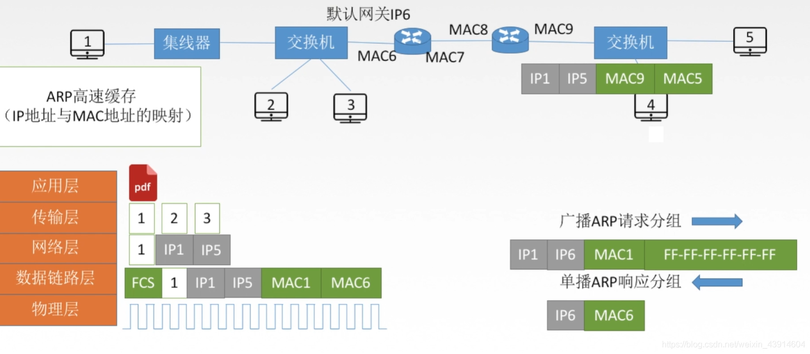
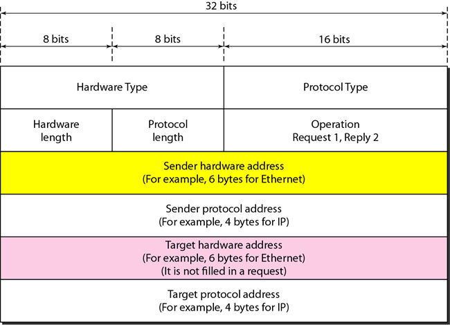
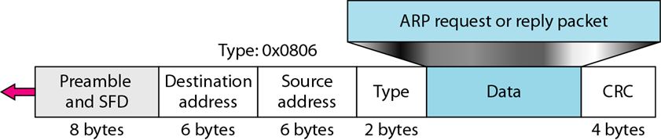
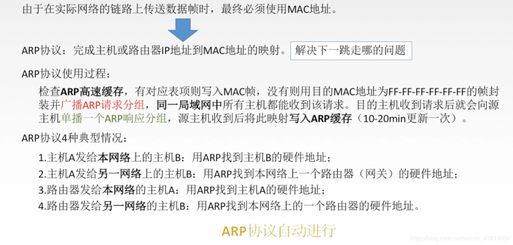
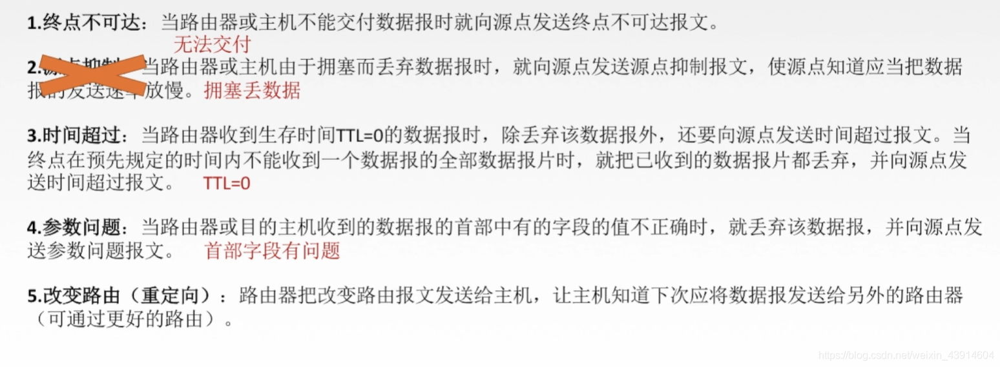

第 21 章 地址映射、差错报告和多播
一. ARP
ARP: Address Resolution Protocol, 地址解析协议
ARP 的概念、分组格式、封装、4 种操作
概念
无论网络层使用什么协议，在实际网络的链路上传送数据帧时，最终必须使用硬件地址。所以需要一种方法来完成 IP地址到MAC地址的映射，这就是地址解析协议(Address ResolutionProtocol, ARP)。 每台主机都设有-一个ARP高速缓存，用来存放本局域网上各主机和路由器的IP地址到MAC地址的映射表，称ARP表。使用ARP来动态维护此ARP表。- 逻辑地址到物理地址
- 直接封装到数据链路层的帧中
- ARP 查询是广播, ARP 回答是单播 (持有对应逻辑地址的节点返回自己的物理地址)
- 支持所有的物理地址与逻辑地址类型

分组格式

- 硬件类型: 指定了物理网络的类型, 比如以太网
- 协议类型: 指定了使用逻辑地址的高层协议的类型, 比如 IPv4
- 两个长度: 字节为单位, 按需求填, 比如以太网物理地址长度是 6, IPv4 协议长度 (就是逻辑地址长度) 为 4
- 操作: 分为 ARP 请求和 ARP 回答
- 四个地址:
- 注意, 在 ARP 请求中, 目标硬件地址填 0, 因为这时还不知道
封装

工作流程

四种情况下的操作(见上图)
- 发送方是一个主机，它希望将分组发送给同一个网络上的另一个主机。在这种情况下， 必须将物理地址映射为逻辑地址，并将该逻辑地址作为数据报头b的目的IP地址；
- 发送方是一个主机，它希望将分组发送给另一个网络上的另一主机。在这种情况下，该主机査找它的路由表，找出这个目的地下一个跳（路由器）的IP地址。如果该主机没有路由表，它就要査找默认路由表的IP地址。这个路由器的IP地址就是必须映射为一个物理地址的那个逻辑地址；
- 发送方是一个路由器，它已经接收到了一个数据报，要将该数据报发送给另一个网络上的一个主机。它先检査它的路由表，找出下一个路由器的IP地址。这个下一路由器的IP地址就是必须映射为物理地址的那个逻辑地址；
- 发送方是一个路由器，它已经收到了一个数据报，要将该数据报发送给同一网络上的一个主机。数据报的目的IP地址就是必须映射为物理地址的那个逻辑地址。
二. 动态主机配置协议DHCP
DHCP: Dynamic Host Configuration Protocol, 动态主机配置协议
- 通过向服务器请求自动获得逻辑地址
- 可以人工配置静态的物理地址和逻辑地址间的对应关系, 也可以在地址池中自动分配
- 自动分配的地址为租用地址, 有时间上限, 到期后需要更新或停用
三. ICMP
ICMP 的概念、报文格式（封装在 IP 报文里面）、差错报告
ICMP: Internet Control Message Protocol, 因特网控制报文协议
概念
- ICMP 不能纠正差错, 只能把出错信息发回给原始的源端
- ICMP报文分为两大类：
- 差错报告报文：向路由器或主机（目的端）报告在处理一个IP数据报时可能碰到的一些问题。
- 査询报文：是成对出现的，它帮助主机或网络管理员从一个路由器或另一个主机得到特定的信息。
报文格式
- 封装在 IP 数据报里面
- 头部固定有 8 字节, 数据部分可变长
- 头部的前 4 字节固定, 后 4 字节随类型变化
差错报告
- 处理 IP 数据报时出现的问题
- 目的端不可达: 找不到对应主机或端口
- 源端抑制: 通知源端出现拥塞与丢弃
- 时间超时: TTL = 0
- 参数问题: 报文格式不对
- 重定向: 主机将报文发送给了绕路的路由器, 该路由器会转发并回送这条差错报告, 可以更新主机的路由表
- 
四. IGMP 的基本概念
IGMP: Internet Group Management Protocol, 因特网组管理协议
- IGMP不是一个多播路由协议，而是一个管理组成员的协议。
- IGMP协议为多播路由器(multicast router)提供关于连接到网络上的主机(路由器)成员状态的信息。